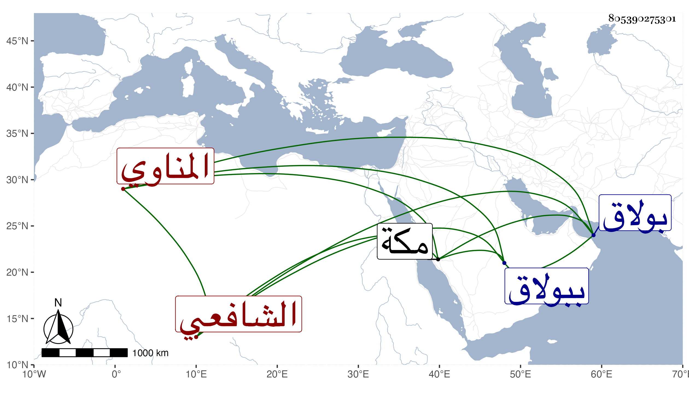

0902Sakhawi.DawLamic.ITO20230111-ara1.EIS1600.805390275301
Biography ID: 805390275301
431
حسن بن علي بن حسن بن علي البدر المناوي الأصل نسبة لمنية الرخا من بحري البولافي الشافعي أحد النواب ويعرف بابن القلفاط حرفة أبيه ، ويلقب جده بالبدوي . ولد في ثالث ذي القعدة سنة ثلاث وأربعين وثمانمائة وأمه هي أخت الشيخ محمد ابنا علي بن صلاح المناوي نسبة لمنية ابن خصيب فنشأ عند خاله المذكور ببولاق وحفظ عنده القرآن والعمدة والمنهاج وألفية النحو وقرأ على النور المناوي شيخ الاستادارية والشرف موسى البرمكيني في التقسيم وغيره ولازم ثانيهما أكثر وكذا حضر عند الشرف المناوي وناب عنه في سنة ثمان وستين بعناية البرمكيني واستمر ينوب لمن بعده ، بل استقر في شهادة أوقافه الحرمين برغبة الشهاب البيجوري له عنها في الأيام الولوية رفيقا للشهاب الزعيفريني وتكلم في عمل انبابة وبلقس وغيرهما وكذا باشر حسبة بولاق في أيام يشبك الجمالي ثم أعرض عن ذلك ، وقرأ على القاضي زكريا في شرحه للبهجة وسمع غير ذلك ، وسافر مع أبيه لمكة وهو صغير ثم حج في سنة ثمان وتسعين وجاور التي تليها ، وكان يجتمع على حتى سمع السيرة النبوية لابن هشام إلا مجلسا والكثير من التذكرة للقرطبي ، وهو صهر الناصري محمد بن محمد مهتار الطشتخاناه للمؤيد بن إينال والمهتار أبوه لا ابنه ، وله حادثة أشرنا إليها في سنة خمس وتسعين
